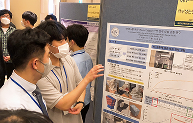

EHA 연구

"친환경적인 소형 EHA를 위한 양방향 사판식 액셜피스톤 수압 펌프의 설계"
송하권, 이용권, 임동원
제어로봇시스템학회 국내학술대회 논문집, 2022.06
"맞춤형 수압 기반 EHA 설계를 위한 이중 사판식 펌프 특성 연구"
김대경, 최예린, 임동원
제어로봇시스템학회 국내학술대회 논문집, 2022.06
"압력기반 하드웨어 중복성 수압 EHA 고장탐지 방법"
박인호, 임동원
제어로봇시스템학회 국내학술대회 논문집, 2022.06

"WMRA를 위한 Hybrid Gripper 안전 설계 실험 검증 연구"
이재진, 오기쁨, 임동원
제어로봇시스템학회 국내학술대회 논문집, 2022.06
RVM 연구
"CNN 전이학습을 적용한 RVM 종이팩 검사 기능 개발"
차영민, 강지원, 임동원
제어로봇시스템학회 국내학술대회 논문집, 2022.06
Cobot 연구

"인공신경망을 이용한 로봇 역기구학 실용 연구"
임동원, 이용권
대한기계학회 동역학 및 제어부분 2022년도 춘계학술대회 논문집, 2022.04